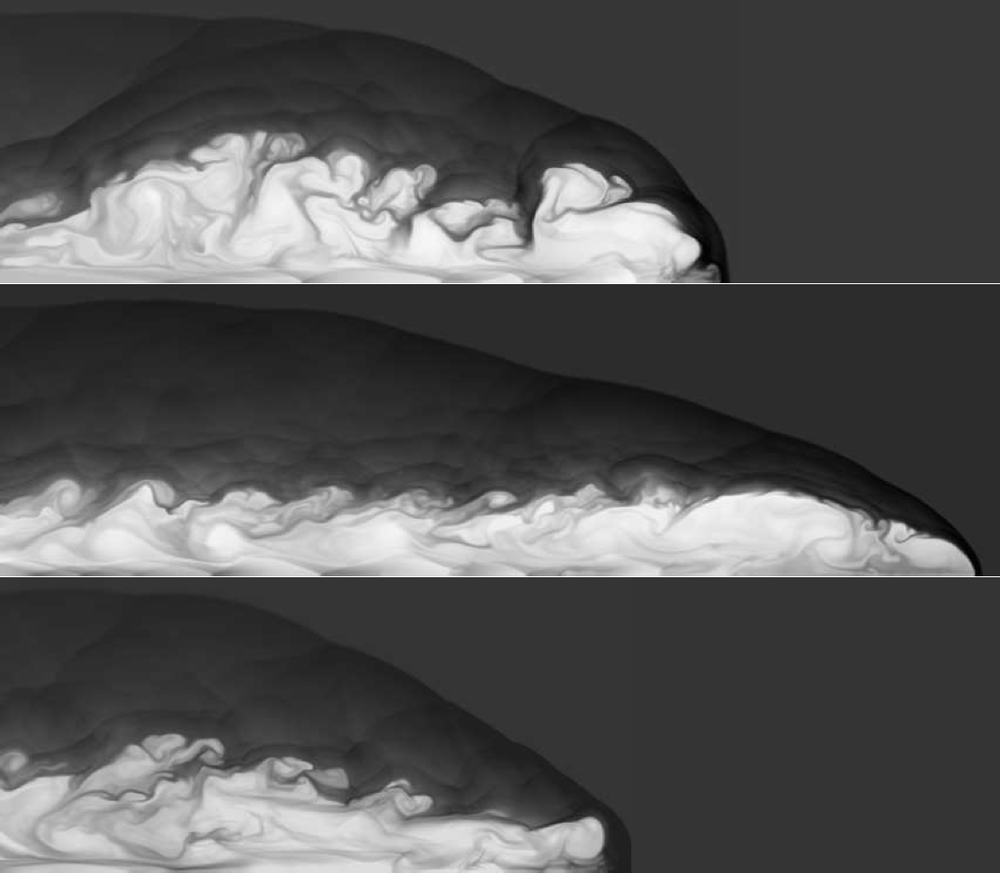
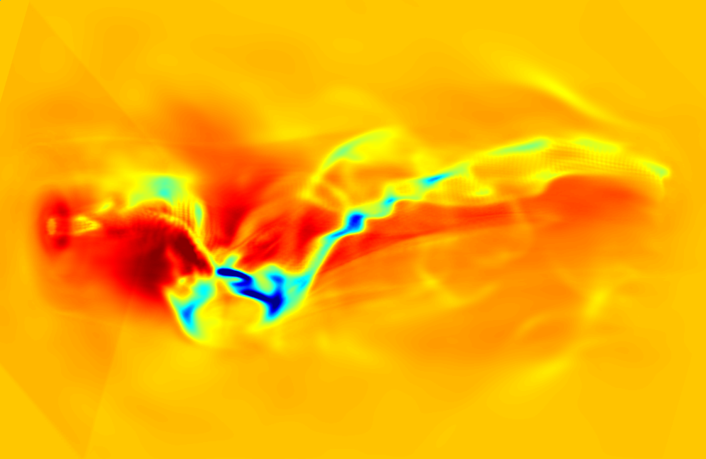
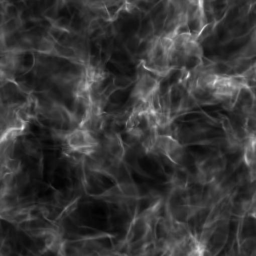
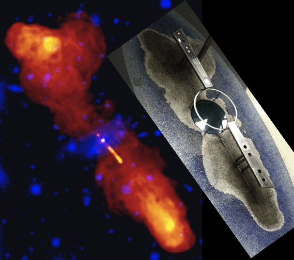
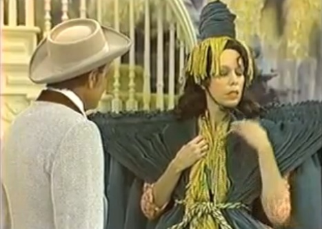

|
Clarchive! |
- Slide show
-
-

Density greyscale of an axisymmetric simulation (top half only shown) of a propagating jet (M=10, η=0.1) from left to right with: (top) passive magnetic field; (middle) strong toroidal field (β=0.2); and (bottom) strong poloidal field (β=0.2) all after the same propagation time. In 2-D, a toroidal field enhances propagation speed, a poloidal field impedes it.
Next slide in 10 seconds...
-

The maiden AZEuS simulation showing the Alfvénic Mach number (colours) and magnetic field lines of a protostellar jet with eight levels of refinement. This is the first simulation to follow a magnetocentrifugally launched jet (at resolution 0.00625 AU) to observational scales (2,000 AU) where the jet takes on its familiar bow-shock led morphology. See Ramsey & Clarke for details.
Next slide in 10 seconds...
-
Line-of-sight integration of the pseudo-synchrotron emission of two ZEUS-3D simulations of supersonic (M=10), light (η=0.1) jets with: (top) a trace magnetic field; and (bottom) a strong (β=0.2) toroidal magnetic field. Jet propagation is from left to right.
Next slide in 10 seconds...
-

Line-of-sight integration of ∇ · v in a jet launched magnetocentrifugally from the left face (red ring with orange centre). The jet propagates from left to right and follows a helical path as it succumbs to higher-order modes of the Kelvin-Helmholtz instability. Details in Ouyed, Clarke, & Pudritz.
Next slide in 10 seconds...
-

Line-of-sight integration of the magnetic energy density in a supersonic (M=10), super-Alfvénic turbulent medium using the Consistent Method of Characteristics (CMoC) in dzeus36 on a 2563 grid.
Return to first slide in 10 seconds...
-
- Teaching
-
Teaching resources
Teaching philosophy
I believe one gets what one works for, and those who work hard in my class will learn a lot. Read more about what you can expect from me as a professor here. A summary of the student evaluation forms for my courses can be found here.
How to get an A in physics
Download an 8.5" × 11" or a 3' × 4' version of my poster.
Course web pages
Below are listed most of the courses I have taught at SMU since 1993; only those I am currently teaching are "live". Selected resources from "dormant" courses (e.g., my primers for PHYS 3210) are available from my "document bar".
ASTR 5700 Magnetohydrodynamics
PHYS 3200 Mathematical Methods in Physics I
PHYS 1100 University Physics I
PHYS 3201 Mathematical Methods in Physics II
PHYS 1101 University Physics II
PHYS 3210 Computational Methods in Physics
PHYS 2200* Introduction to Mathematical Physics
PHYS 3350 Thermal Physics
PHYS 2300* Vibrations and Waves
PHYS 3500 Quantum Mechanics I
PHYS 2301* Analytical Mechanics
PHYS 4380 Fluid Dynamics
PHYS 2302 Mechanics I
PHYS 4500 Quantum Mechanics II
PHYS 2303 Mechanics II
*Course no longer part of the curriculum.
Official department curriculum
In 2007, the department curriculum was revised and fully documented. Expectations and outcomes for each course were defined, described, and placed on the web for faculty and student reference. I encourage students to review the course curriculum of each course they take, and to hold their professors accountable to its content.
- Research
-
Research interests
I am the developer and curator of the widely used magnetohydrodynamics (MHD) computer code, ZEUS-3D. With it, I and my students perform multi-dimensional simulations of fluid phenomena such as astrophysical jets.
You can read more about my research interests here, consider graduate student projects here, and see a partial list of my publications here.
Research-related web sites

ZEUS-3D website for gallery, description, user/installation guides, and downloading the code (version 3.6).
AZEuS (AMR+ZEUS-3D) website for gallery and description. The code is not yet ready for distribution.
EDITOR is my source-code manager for ZEUS-3D and AZEuS. Version 2.2 and user manual available for download.
Past and present students and PDFs: Where are they now?
I am pleased to say that every student who finished their degree with me moved on successfully to the next logical stage of their academic career.
Early in my career, I dabbled in radio astronomy using the VLA to observe radio galaxies such as 3C 219 (above left; image courtesy Alan Bridle, NRAO). You might imagine my surprise when, about ten years later, I happened upon our data immortalised in tile on the Hayden Planetarium floor (insert; image courtesy of Jodi)!
- U/G advising/Service
-
Undergraduate advising and academic service
I am currently the department's undergraduate advisor and Science Atlantic representative.
Undergraduate research mini-symposia
Links to the programmes (PDF files) for the department's annual summer student mini-symposium that I've organised over the years.
2009 2010 2011 2012 2013 2016 2017 2018 2019 2020 2021 Graduate Record Examinations (GRE).
Senior undergraduates considering applying to graduate schools in the US must determine whether taking the GRE is necessary. Some non-US schools may also require the exam as part of the application.
The exam is administered locally by Prometric Testing Centre; 6440 Quinpool Rd.; 422-8378 whom you should contact to schedule the time of your test. Exams should be taken at least four weeks before application deadline to US schools, and 6-8 weeks before deadlines to non-US schools.
As of September, 2013, the fee for the general exam is US$185, and for the subject (physics) exam, US$150, which includes delivery of your results to four institutions. Additional institutions are US$25 each. Obviously, check with the targeted school if the GREs are even required before scheduling, studying, taking, and paying for them!
University Committees
Science Curriculum Cmte., department rep.
A&P Curriculum Cmte., chair
Science Space Cmte., department rep.
University Copyright Cmte., faculty rep. (2011-)
Academic Appeals Board, faculty rep. (2006-)
University Budget Cmte., faculty rep. (2002-05)
Sexual Harassment Cmte., faculty rep. (1997-2000)
Graduate Awards Cmte., department rep. (1997-98)
Academic Standing Cmte., faculty rep. (1995-98)
Academic Computer User's Cmte., faculty rep. (1993-94)
National Committees/Panels
ACEnet SMU Local user's group, chair (2008-09)
ACEnet Research Directorate, founding member
CASCA Theory and Computation Cmte. (1998-2004)
(2002-06)
CFI RDF Selection Cmte. (1998-2000)
CITA Council (1998-2000)
NRAO review panel (1993-95)
- Document bar
-
Document bar
Links to the PDFs of primers and manuals I have written or contributed to are given below. For documents authored solely by me, permission is granted to use and distribute freely for non-profit and academic purposes only, provided the original authorship and affiliation are retained. Those wanting any of the LATEX files should contact me directly.
Did someone say bar?
A primer on MHD A quick introduction to Hannes Alfvén's masterpiece.
A primer on ZEUS-3D For those who want a quick introduction to my research code.
A primer on Tensor Calculus Something I prepared for my own edification.
FORTRAN77 primer A quick start-up guide for first-time programmers in FORTRAN.
Unix primer Exceedingly basic introduction to unix for first-time users.
DBX primer Beginner's guide to debugging with Sun's DBX.
LATEX primer An augmented version of David Wilkins' excellent primer.
dzeus34 user manual User manual for ZEUS-3D, version 3.4.
dzeus35 user manual User manual for ZEUS-3D, version 3.5.
dzeus36 user manual User manual for ZEUS-3D, version 3.6.
edit21 user manual User manual for EDITOR, version 2.1.
edit22 user manual User manual for EDITOR, version 2.2.
Lab manual and answer guide for a two-semester first year calculus-based physics course (e.g., HRW), no longer in use at SMU for reasons too tedious to explain. If anyone else can use them, I can provide the LATEX files and figures.
- Software bar
-
Software bar
Offered here is a collection of short programs and coding snippets of possible use. All are available open source, as is, and without any expressed or implied warrantee. Those interested in my research codes such as ZEUS-3D should visit my Research slide.
All codes are bundled into compressed tarballs. Once downloaded and placed in the desired directory, issue the command: tar xvzf ---.tar.gz, then follow the directions in the README file in the newly created directory.
1dplot.tar.gz cheap-and-cheerful self-contained library to generate publication-quality 1-D postscript plots
fans.tar.gz calculate and plot MHD rarefaction profiles for a given upwind state
mhdrmn.tar.gz an exact evolutionary MHD Riemann solver including all switch-on/off waves
- Personal
-
DC's personal page
Despite my background in algorithm development and supercomputer simulations, I remain a bit of a luddite. I'm not a blogger, I don't do Facebook, and I most certainly don't tweet. This web-page, then, represents my first and likely only foray into "social media".
Background
Born in Charlottetown, Prince Edward Island to Sheila (née Davison; Charlottetown) and Alan Clarke (Halifax) in 1958, I was raised in Ontario and did my B.Sc. at Queen's University at Kingston (Honours Physics, 1981). My M.Sc. (Thesis: "Two-Dimensional Collapse of a Rotating Interstellar Cloud", 1984) was also from Queen's under Dick Henriksen. My Ph.D. (Dissertation: "A Search for the Effects of Active Magnetic Fields in Extragalactic Radio Sources", 1988) was from the University of New Mexico under Jack Burns and Mike Norman (LANL, NCSA).
I was a post-doctoral fellow at the NCSA (U. Illinois) from 1988–1992 under Mike Norman, and a post-doctoral research associate at the Harvard-Smithsonian CfA from 1992–1993 under Ramesh Narayan.
In 1993, I was appointed an assistant professor at Saint Mary's University, promoted to associate professor in 1995, gained tenure in 1996, and promoted again to full professor in 2003. During my 2000–2001 sabbatical leave, I was appointed astronome invité at l'observatoire de Grenoble. You can view my CV here.
Family
I went to the U.S. in 1984 single, came home in 1993 with a family. My wife of 34 years (as of Oct. 2021), Jodi Asbell-Clarke, hails from North Haven, CT and is currently a senior science curriculum developer at a non-profit in Cambridge MA. My son, Dane, born in Albuquerque NM in 1989, received his BIT from Carleton/Algonquin in 2011 and is a graphic artist (check out his webpage!) while my daughter, Alison, born in Urbana IL in 1992, completed her political science degree from the University of Guelph in 2014. Both live in Halifax.
Both of my parents have passed. I have two brothers; Peter Clarke lives in the Toronto area with his wife Mayr, and Gordon Macdonald lives on Vancouver Island with his wife Nicky. My step-mother, Adaline O'Gorman, lives in Victoria.
Whimsy
I offer here a few snippets of "pre-historic" comedy, all from well before most of our students were born! They're timeless, they're clean, and they're fun; enjoy!
Many from my generation remember the Carol Burnett Show as a one-of-a-kind. In the few years SNL has been great, it has occasionally come close. A few of my favourite sketches include...
 Harvey Korman trying not to laugh as Tim Conway fills himself with novacaine.
"Stroke!...Stroke!...I think I'm having a...Stroke!"
"Thank you, I saw it in the window, and I just couldn't resist it." (Part 1, Part 2)
And speaking of SNL, here are a few of my favourite characters: Dana Carvey's "Church lady", Martin Short's "Ed Grimley", and Kristen Wiig's "Kathie Lee Gifford".
Dana Carvey on Church Chat: "Well, isn't that special."
Martin Short's Ed Grimley: "Gimme a break, I must say."
Snippets of Kristen Wiig's Kathie Lee Gifford.
One of my Dad's all-time favourites was Victor Borge (1909-2000). His "phonetic punctuation" sketch is a classic.
"Phonetic Punctuation"
"Hands Off"
Victor Borge, the duet
Quotable quotes
All the world's daft, save thee and me. And lately I've been wondering about thee.
My Nana's paraphrasing of Robert Owen's (1771-1858) utterance in 1828 on severing business relations with his partner William Allen: All the world is queer save thee and me, and even thou art a little queer.
If, in the last few years, you haven't discarded a major opinion or acquired a new one, check your pulse. You may be dead.
American poet Gelett Burgess (1866-1951).
Brag of your country. When I am abroad, I brag of everything that Nova Scotia is, has, or can produce and, if they beat me at everything else, I say: `How high do your tides rise?'.
Joseph Howe (1804-1873); journalist, politician, poet, referring to the 16 m tides in the Bay of Fundy. It is because of his success at defending himself against a charge of seditious libel in 1835 that Canada has a free press.
Figure out who you are, then do it on purpose.
Dolly Parton.
You don't really understand something until you can compute it.
Computational astrophysicist Michael L. Norman, on numerous occasions.
Numquam ponenda est pluralitas sine necessitate; Plurality must never be posited without necessity.
William of Ockham (1287-1347), though versions of "Occam's Razor" can be traced to Ptolomy (90-168 AD): We consider it a good principle to explain the phenomenon by the simplest hypothesis possible. Modern versions include: The simplest explanation is usually the best.
If I have seen further than others, it is by standing upon the shoulders of giants.
Sir Isaac Newton (1642-1727).
I do not know what I may appear to the world, but to myself I seem to have been only like a boy playing on the sea-shore, and diverting myself in now and then finding a smoother pebble or a prettier shell than ordinary, whilst the great ocean of truth lay all undiscovered before me.
attributed to Sir Isaac Newton shortly before his death in 1727.
The most incomprehensible thing about the Universe is that it is comprehensible.
Albert Einstein (1879-1955).
He must be a dull man who can examine the exquisite structure of a comb, so beautifully adapted to its end, without enthusiastic admiration.
Charles Darwin (1809-1882) in his On the Origin of Species, when introducing the role of instinct in the construction of "humble-bee" hives.
We have to learn again that science without contact with experiments is an enterprise which is likely to go completely astray into imaginary conjecture.
Hannes Alfvén (1908-1995).
Prediction is very difficult, especially about the future.
Niels Bohr (1885-1962), often (but incorrectly) attributed to Yogi Berra.
Those who are not shocked when they first come across quantum theory cannot possibly have understood it.
Niels Bohr.
I cannot seriously believe in quantum theory because it cannot be reconciled with the idea that physics should represent a reality in time and space, free from spooky actions at a distance.
Albert Einstein, 1948, on his favourite critique of quantum mechanics where, so the theory requires, a measurement at location B can instantaneously have an influence at location A. On this he had stated the year before: My instinct for physics bristles at this, and in 1935 he wrote: No reasonable definition of reality could be expected to permit this. To Niels Bohr's quotation, Albert Einstein was certainly shocked!
I have stated previously that the arrow of time should follow the arrow of universal expansion, and if the universe should start to collapse, we'd all start getting younger. I was wrong.
Stephen Hawking (1942-2018) in an address to the XIII Texas Symposium on Relativistic Astrophysics, Chicago, 1986.
Only two things are infinite: the universe and human stupidity, and I'm not sure about the former.
Albert Einstein.
I haven't an inkling, and it takes a thousand inklings to make a clue!
Origin unknown. While it appears in the 1997 novel Larry's Party by Carol Shields, it was my father's response to unanswerable questions since long before then.
Freedom has to be armed no worse than tyranny.
Ukrainian President Volodymyr Zelenskyy.
And I find it kinda funny, I find it kinda sad; the dreams in which I'm dying are the best I've ever had; I find it hard to tell you, 'cause I find it hard to take; when people run in circles, it's a very very mad world, mad world.
from Mad World by Roland Orzabal and Curt Smith, Tears for Fears (1982); covered in 2001 by Michael Andrews and Gary Jules for the soundtrack of Donnie Darko.
- Up-loading dock
-
What's up-loading, dock?
Space to place documents temporarily for uploading.
Looking for my course web pages? Go to my Teaching slide. ZEUS-3D or AZEuS? Go to my Research slide. Primers and manuals? Go to my Document bar. |
Last updated by DAC, Jan. 4, 2022 |
Background: ZEUS-3D simulation showing the magnetic energy density in a super-Alfvénic turbulent medium. |